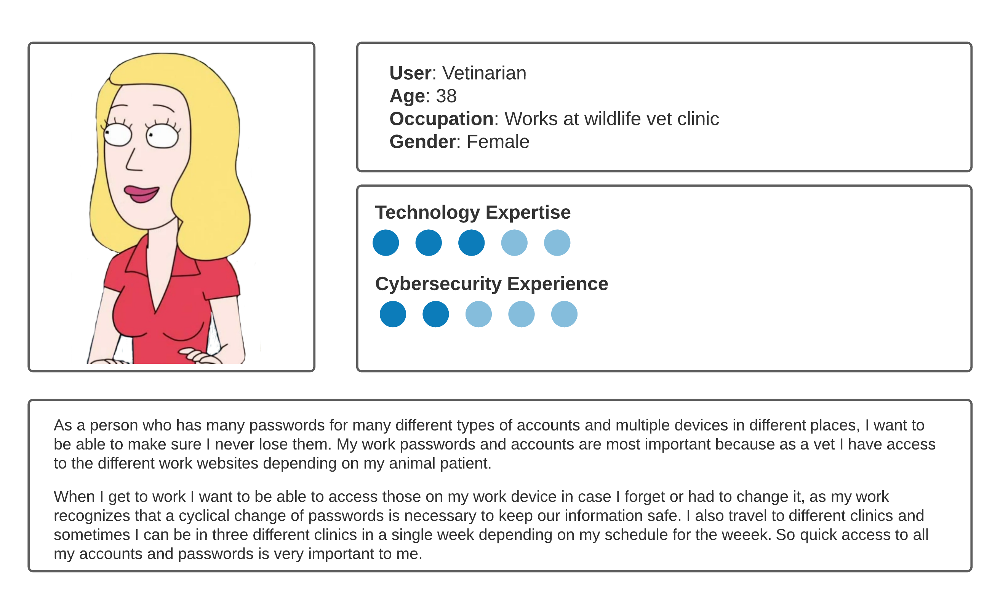

Cloud Backup
Description
With the increasing need for online accounts for work, casual or entertainment reasons; there is a need to be able to store all the data on a secure platform. Backup and storage is expected in case of memory wipe or compromise to the device that does not allow access or normal function to occur. In addition to storage there is also a need for on-demand access so if there is a change in device there would be no issues receiving the data.
Cloud backup is the key to all digital storage and backup solutions. Aside from just digital storage, security of the data must be considered. The chosen host for the cloud storage must have up to date encryption and security features that would not be open to DDoS attacks or any other malicious attacks, because users will rely on this to keep their passwords safe as their accounts can lead to sensitive information.
PassFree will be choosing AWS services, as they offer scalable cloud storage and its security features are up to date, in addition to their reputable services that are used and trusted by many organizations.
Validation
In order to validate the usability of this feature, the user must set up an account at Passfree and then login to their account using their email address and password. After that, they must generate a password for any website requiring login access and then save it in their profile. They should be able to access their password(s) anytime they wish using any device they would like to.
User data will be automatically synced to the cloud storage. This feature is considered more passive but plays a large role in offering feature that takes away the hassle of setup on every new device.
Possible Errors
- If the host server is offline then there would be an issue in backing up any new data. In this case, there is no solution to the error. The best action to prevent and avoid it is to find a host that does not have a history for disruption or outage. Research for a reputable and trustworthy host is highly necessary because the user depends on your choices and trust you have done the research for them.
- This is will be accounted for as human error in which the application development has an issue that was not fixed, tested, or compromised in a software update. To prevent this error, thorough testing and strict monitoring of the configurations will reduce the likelihood of this happening.
- The cloud backup storage should be treated as offsite storage in case there is an issue with server connection. There should be local storage on the web application itself. Even if the web application automatically will update any changes regularly, there is a need to ensure all scenarios of backup failure.
- Syncing is not the same as a backup. This can confuse a user because if they were to access their account on a different device they will see all their data and possibly assume syncing is equal to backup. Transparency to a user is highly important and this can be rectified by explaining the difference with the web application description.
User Story
Cloud Backup